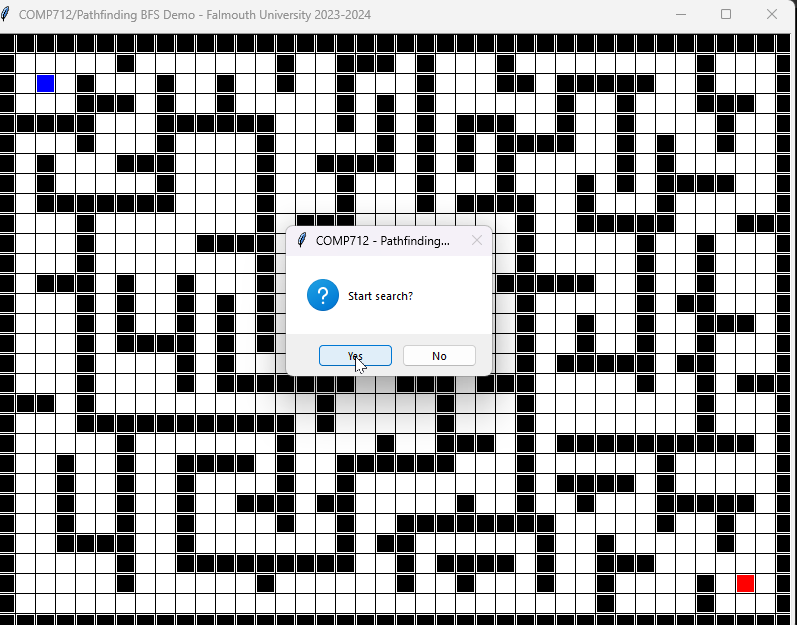

Dr Daniel Zhang @ Falmouth University
2023-2024 Study Block 1

It’s a very common and important problem in most of the games with a grid-like world maps. The pathfinding algorithm is crucial for the AI to move efficiently from one position to another. Most of the bugs in game productions are related to an ineffective or buggy pathfinding implementation.
We’ve learnt different pathfinding algorithms during the lecture. In the following 2 workshops, you are required to revisit the theories of some of the popular pathfinding algorithms and implement them to help your understanding.
This is the part 1 of the 2 workshops: Breadth-First Search (BFS), Depth-First Search (DFS), and Greedy Best-First Search (GBFS).
Note: While this workshop outlines three main tasks and this second one has two, you have the flexibility to manage the content across the two workshops at your own pace. You can continue to work on the tasks listed below in the second workshop.
Breadth-first search (BFS) is an algorithm used in graph traversal and pathfinding. It systematically explores all the neighbour nodes at the present depth level before moving on to nodes at the next level of depth. It starts from a specified node and explores all its neighbours before moving to the next set of neighbours. This technique follows the principle of visiting all immediate neighbours before exploring the neighbours’ neighbours, ensuring that nodes closer to the starting point are visited first before venturing further away.
The algorithm employs a queue data structure to maintain the order of nodes to be visited. Starting from the initial node, it examines its neighbours, adding them to the queue. It then proceeds to visit the next node in the queue, exploring its neighbours and enqueuing them if they haven’t been visited yet. This process continues until all reachable nodes have been visited. BFS is often used to find the shortest path between two nodes or to explore a graph systematically, level by level, ensuring that the algorithm visits nodes in increasing order of their distance from the starting node. Its ability to find the shortest path makes it an essential tool in various applications, from network routing to game development.
The BFS algorithm can be presented using the following pseudocode:
procedure BFS(G, v)
clear Q
label v as explored
Q.enqueue(v)
while Q is not empty do
get the head node from Q
if v is the goal then
return v
for all edges from v to w in G.adjacentEdges(v) do
if w is not labelled as explored then
label w as explored
mark v as w's parent node
add w to Q
Similarly, Depth-First Search (DFS) is a traversing algorithm that explores as far as possible along a branch and then backtracks to explore other branches. It starts at a designated node and visits one of its children repeatedly until it reaches the deepest level of the tree or graph. Once it reaches the end, it backtracks to the last node with unexplored branches and continues until it explores all possible paths. This process continues until all nodes in the graph have been visited.
The DFS algorithm employs a stack to keep track of visited nodes and navigate through the graph or tree. It explores each branch entirely before backtracking, making it more memory-efficient than BFS. However, DFS might not always find the shortest path because it doesn’t guarantee visiting the closest nodes first. It’s a popular algorithm used in maze-solving problems, topological sorting, and cycle detection in graphs due to its ability to systematically explore all possibilities within a branch before moving on to others.
Due to the natural of DFS algorithm, it can be implemented either recursively or non-recursively.
procedure DFS(G, v) is
label v as discovered
for all directed edges from v to w that are in G.adjacentEdges(v) do
if vertex w is not labeled as discovered then
recursively call DFS(G, w)
procedure DFS(G, v) is
let S be a stack
S.push(v)
while S is not empty do
remove tail node n from s
if n is not labeled as discovered then
label n as discovered
for all edges from n to w in G.adjacentEdges(n) do
S.push(w)
Greedy Best-First Search (GBFS) is another algorithm used in graph traversal and pathfinding. It’s heuristic-based and aims to reach the goal by consistently selecting the node that appears to be the most promising. Instead of exploring all possibilities equally, GBFS prioritises nodes that are closer to the goal based on a heuristic function. This function estimates the cost or distance from the current node to the goal, allowing GBFS to always expand the node that seems most likely to lead to the goal.
In GBFS, the open list stores nodes yet to be explored, and at each step, it selects the node from this list that appears to be the closest to the goal. This decision is based on the heuristic function’s estimation, which evaluates the potential of each node. While GBFS can be highly efficient when the heuristic provides accurate guidance towards the goal, it might not always guarantee the shortest path. If the heuristic function doesn’t accurately reflect the actual distance to the goal, GBFS might prioritise nodes that lead to dead ends or away from the optimal path.
GBFS is commonly used in scenarios where a rough estimate of the distance to the goal is available and where finding an exact solution is less critical than reaching a reasonably good solution quickly. It’s widely used in applications such as navigation systems and maze-solving algorithms.
procedure GBFS(G, v) is:
mark v as visited
add v to queue S
while S is not empty do:
current_node ← vertex of queue with min_distance to goal
remove current_node from queue
foreach neighbour n of current_node do:
if n not in visited then:
if n is goal:
return n
else:
mark n as visited
add n to queue
return failure
This repository contains the materials for COMP712 - Pathfinding (1) workshop.
https://github.falmouth.ac.uk/Daniel-Zhang/COMP712-Pathfinding-1.git
There are three demos available:
demo_bfs.pyc: Demonstrates Breadth-first searchdemo_dfs.pyc: Demonstrates Depth-first searchdemo_gbfs.pyc: Demonstrates Greedy best-first searchLThe gui_lib.pyc file contains all the necessary GUI capabilities that shouldn’t be altered. However, some functions might aid in pathfinding visualisation.
The important pieces are:
Cell: Represents a grid on the board, with row and col in the same way as Point class’s y and x fields. It also has a parent field for easy tracing the found path if needed.
CellType: enum contains the pre-defined types of the Cell
BLOCK: marks the cell that is unreachableEMPTY: marks the empty cell, reachableSTART: marks the starting cell for searchingEND: marks the target cell for searchingThe following cell types will be used in next session.
GRASS: marks a grass cell with a cost of 5DESERT: marks a desert cell with a cost of 10WATER: marks a water cell with a cost of 15Canvas: The base class of all sub-classes including BFS, DFS, GBFS, and the other 2 of the next workshop – DIJKSTRA and ASTAR.
x_grid_num: the number of grid horizontally. It remains unchanged unless you call setGridNum() explicitly.y_grid_num: the number of grid vertically. It remains unchanged unless you call setGridNum() explicitly.grids[][]: the 2D matrix (list of list in python) holds the cell values.getValidNeighbour(Cell, direction): Retrieves the neighbour on the specified direction.
Cell represents a cell object, while direction can be one of east, north-east, north, north-west, west, south-west, south, south-east.colourCell(Cell, colour, ratio=0.8): Fills the specified Cell with the given colour. The default ratio is 0.8, filling 80% of the cell with the colour.
animateCell(Cell): Changes the cell colour during the searching process. It takes care about the cell type so that you don’t need to worries about which colour to use - simply call the function by providing the cell itself.
The start and target cells are saved as self.start and self.end, while the path found should be saved as a list of Cell objects in self.path.
Each algorithm should be implemented in its respective .py file:
search() function is mandatory in each file as the main lib relies on it for the search process. It should return True or False to indicate if a path can be found from start to end.Run the demos to see how each of the algorithms work differently. You can either load the provided maps or create map by yourself.
demo_gbfs.pyc with pre-defined map map3.txt to see how it can be simply trapped in the local optimalBFS BFS algorithm in bfs.py. Again, you only need to make sure the self.path list has bee filled by Cell objects from the start to the end. Make use of the parent data field of the Cell class.demo_bfs.pyc with extra input parameters and compare the results. Think about where the differences come from.
BFS search towards the target.RECALL:
- The
self.search()function is mandatory.- It should return
TrueorFalseto indicate if a path can be found fromself.starttoself.end.- Make sure you fill up the
self.pathlist with cells on the found path.- To enable animation, make use of the following code snippets in your
search()function.# other code blocks ... if self.animate: self.animateCell(c) self.update() # other code blocks ...
DFS DFSDFS with BFS you implemented in the last task.demo_dfs.pyc with extra input parameters and compare the results. Think about where the differences come from.
DFS search towards the target.2 for several times to see how the found path changes.GBFS GBFS algorithmgbfs_demo.pyc is the Euclidean Distance. You can define your own heuristic function used as Cell priority.GBFS with BFS and DFS using the same map.map3.txt and map5.txt have been purposefully crafted for utilisation with GBFS.Note: The
gui_lib.pyccontains two helper functions that might assist in your implementation. Feel free to use alternative methods if preferred.
getGridDist(c1, c2): Retrieves the Manhattan Distance between two Cells by applying the equationabs(c1.row - c2.row) + abs(c1.col - c2.col).getGridEuclideanDist2(c1, c2): Determines the squared Euclidean distance between two cells using the equation(c1.row - c2.row)2 +(c1.col - c2.col)2. The actual Euclidean distance involves thesqrtoperation, but for comparison purposes, the squared value is calculated for faster computation.- You can utilise Python’s built-in data type
listto serve as a priority queue by creating your own priority function if you prefer. Alternatively, thePriorityQueueclass can be quite helpful in managing prioritised elements.
The default implementation focuses on exploring 4 neighbours around a given cell: north, south, east, and west. However, in certain games, characters are capable of moving in 8 different directions rather than just 4, as depicted in the image below.
Note:
You can submit a pull request to the original repository to showcase your work if you like.